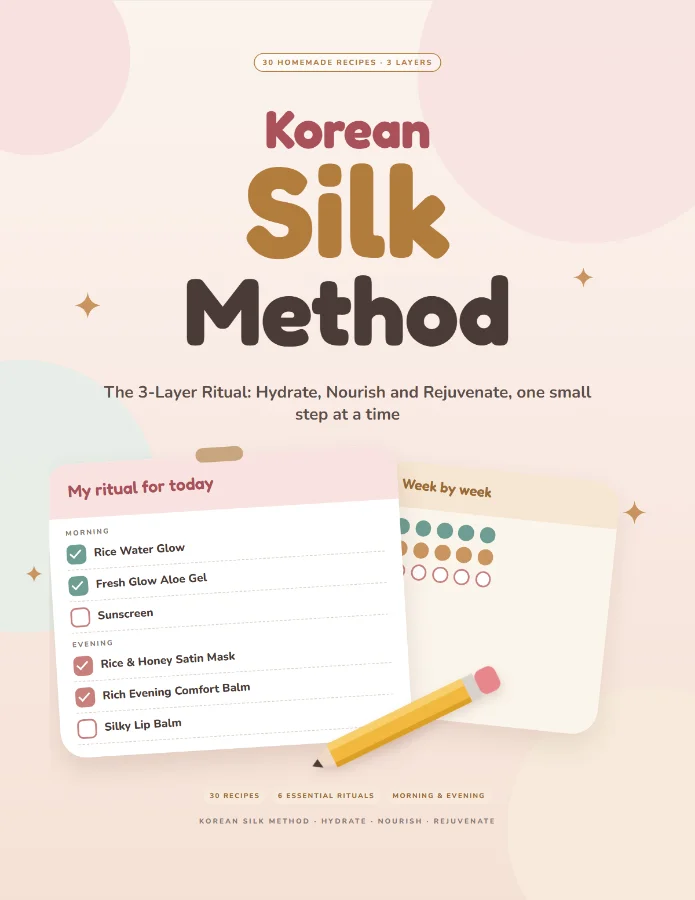
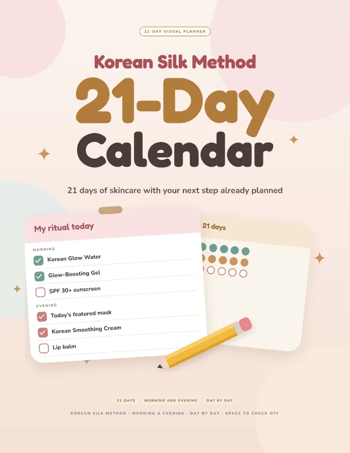
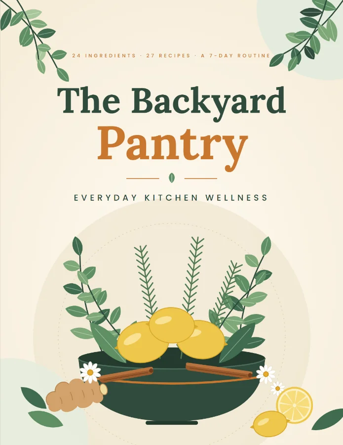

Bonus 1 · Premium
7-Day Challenge Calendar
A 31-page e-book with one sheet for each day, a morning and an evening plan, and the recipes for that day. Introduce one new mixture at a time.
Thank you! Your Korean Silk Method is ready: Complete guide (30 recipes). Just the recipes: about 33 cents each.

Keep this page: you can come back to it anytime.
Get started
Tap the button above. Your Korean Silk Method opens in your browser, ready to read.
In your browser menu choose "Add to Home Screen" (or "Share" then "Add to Home Screen" on iPhone) and it opens like an app.
Start with one new recipe at a time.
Optional upgrade
6 Essential Rituals · Morning and night routine · 6 goal-based routines · 7-Day Challenge with calendar · Secret ingredients guide · Bonus 1: 7-Day Challenge Calendar · Bonus 2: Ritual Shopping List · Bonus 3: Weekly 3-Layer Checklist.
$10.00 + $3.00 = $13.00 total
Premium regular price $19.90; as a new customer you can upgrade now for $3.00 more.
Bonus 1 · Premium
A 31-page e-book with one sheet for each day, a morning and an evening plan, and the recipes for that day. Introduce one new mixture at a time.
Bonus 2 · Premium
A 23-page e-book with shopping lists by category and by week, so you buy what you need once and tick it off in the store.
Bonus 3 · Premium
A 39-page e-book of printable weekly sheets for your three layers: what you did, how your skin felt, and what to repeat next week.
| What is included | Basic | Premium |
|---|---|---|
| Complete Korean Silk Method guide | Included | Included |
| 6 Essential Rituals | Not included | Included |
| Morning and night routine | Not included | Included |
| 6 goal-based routines | Not included | Included |
| 7-Day Challenge with calendar | Not included | Included |
| Secret ingredients guide | Not included | Included |
| Bonus 1: 7-Day Challenge Calendar | Not included | Included |
| Bonus 2: Ritual Shopping List | Not included | Included |
| Bonus 3: Weekly 3-Layer Checklist | Not included | Included |
Optional add-ons
Your guide is complete without them.

Your 21 days laid out day by day, so you can see the whole ritual at a glance.

24 ingredients, 27 recipes, and a 7-day routine for everyday kitchen wellness.
These two optional add-ons were shown at checkout. If you added one, it is yours. If you did not, you can unlock either one later in the app: open the Materials tab and choose the add-on.
Trouble opening your guide? Write to us and include the email you used at checkout.
support@example.com